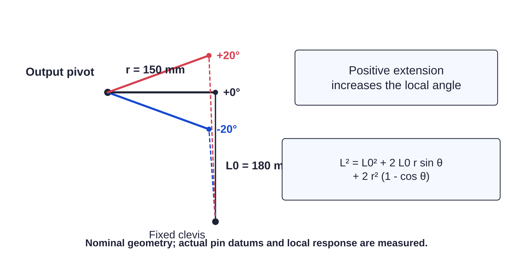

Reference / nominal settings178 / 179
Keep these numbers at the bench
These values describe the fabricated nominal geometry and conservative controller envelope. Physical measurements still decide usable motion.

| Property | Nominal value |
|---|---|
| XYZ intended travel | ±85 mm / 170 mm total |
| XYZ switches / metal stops | ±89 mm / ±94 mm |
| Yaw / roll envelope | ±20° soft; ±21° switch; ±22° stop |
| Pitch envelope | −20…+10° soft; −21/+11° switch; −22/+12° stop |
| Angular lever / neutral clevis | 150 mm / 180 mm |
| Lead / belt / motor | 2 mm / 80:20 = 4:1 / 200 full steps |
| Issued scale | 16 external microsteps; 6400 counts/mm |
| Nominal full-step extension | 0.0025 mm / 2.5 µm / 16 counts |
| XYZ soft counts | −544000…+544000 |
| U/W soft counts | −326307…+329471 |
| V soft counts | −326307…+166782 |
| Command envelope | ≤0.1 mm each screw; 100–2000 ms duration |
| Bench current scales | 10/10/10/10/10/10; 0.337 A RMS |
| Loaded X/Y/Z/U/V/W | 10/10/22/10/14/10; Z 1.271 A, V 0.459 A, others 0.337 A |
| Loaded VSENSE | 1/1/0/1/1/1; Z uses VSENSE0 |
| Retainer breakaway / N·m | z 0.20–0.23; pitch 0.06–0.08; roll 0.02–0.04 |